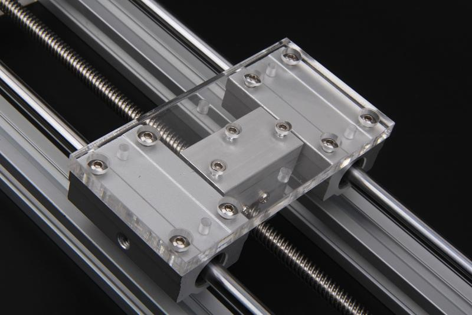

Linear slide table is a mechanical structure that can provides linear motion. Widely used in CNC machine, laser cutting machine, 3D printer, etc. Not like the expensive industrial grade linear slide table This Linear Slide Table made of acrylic,aluminum ,Steel and other standardized parts. Because made of acrylic and aluminum, So it's light and cheap.
Model:[110070014]

Size：246*106*50mm
Stroke：150mm
Guide screw Lead：8mm
Step Motor parameters
•Phase: 2
•Step Angle：1.8°
•Voltage: 24
•Phase Current： 1.7A/Phase
•Phase Resistance： 2.2ohm/Phase
•Phase inductance： 3.8mH/Phase
•Holding Torque： 3.5Kg.cm
•Lead Wire： 4
•Insulation Class： B
•Motor length： 40mm
Assembly diagram is as follows:
| Part | Package | Qty |
|---|---|---|
| Step Motor | 42HS40-1704A-001 | 1 |
| Aluminum Stand | 232*20*20mm | 2 |
| Shaft | Diameter8*232mm | 2 |
| Support Base-1 | 106*50*10mm | 1 |
| Support Base-2 | 106*50*10mm | 1 |
| Platform | 117*60*8mm | 1 |
| Guide Screw Nut Stand | 44*40*24mm | 1 |
| Guide Screw | Length 210mm | 1 |
| Guide Screw Nut | Lead 8mm | 1 |
| Coupling | 5mm-8mm | 1 |
| Liner Bearing | SCS8LUU | 2 |
| Bearing Block | KFL08 | 1 |
| Nut | M3*2.5 | 3 |
| Nut | M5*3.5 | 2 |
| Screw | M3*10 | 4 |
| Screw | M3*14 | 4 |
| Screw | M3*12 | 3 |
| Screw | M4*8 | 4 |
| Screw | M4*12 | 8 |
| Screw | M5*16 | 2 |
| Screw | M6*12 | 4 |